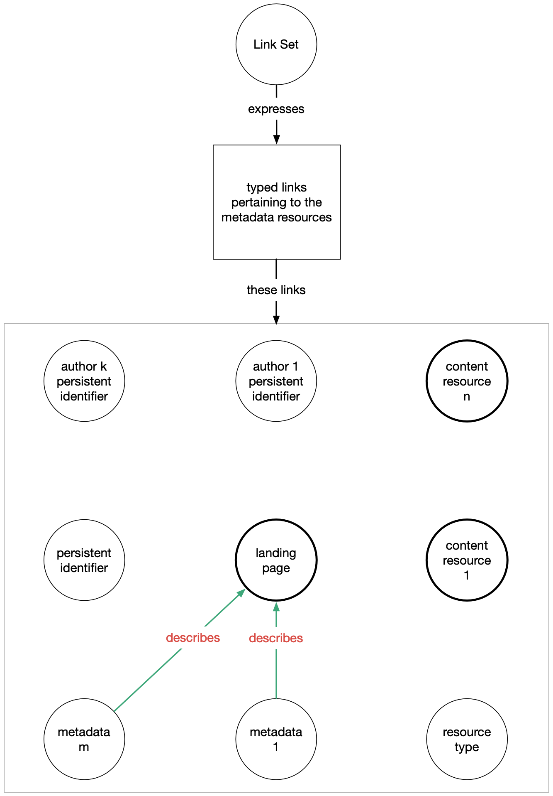

FAIR Signposting Profile
Prepared by: Herbert Van de Sompel, Martin Klein, Shawn Jones, Michael L. Nelson, Simeon Warner, Anusuriya Devaraju, Robert Huber, Wilko Steinhoff, Vyacheslav Tykhonov, Luc Boruta, Enno Meijers, Stian Soiland-Reyes, Mark Wilkinson
This version, created 20230512: https://www.signposting.org/FAIR/
 Robustify Your Links!
Robustify Your Links!Previous version, created 20220727: https://www.signposting.org/FAIR/
Please provide feedback in the GitHub Signposting repository
This page details concrete recipes that
platforms that host research outputs (e.g. data repositories,
institutional repositories, publisher
platforms, etc.) can follow to implement Signposting,
a lightweight yet powerful approach to increase the FAIRness of scholarly objects.
Landing pages support humans that interact with scholarly objects on the web, providing descriptive metadata and links to content. These pages are not optimized for use by machine agents that navigate the scholarly web. For example, how can a robot determine which links on the myriad of landing pages lead to content and which to metadata? Signposting caters to machine agents by providing this information, and more, in a standards-based way. It contributes to FAIR's Findable, Accessible, and Reusable by uniformly conveying to machines what the persistent identifier of a scholarly object is, where its landing page is, where and what its content is, where metadata that describes it is, and what the persistent identifier of its author is. It conveys this by means of meaningful links that have web locations (HTTP URIs) as their target. As such it does significantly more than merely providing the information. It invites machine agents to follow the links to their target location on the web, and hopefully find further information and links there. It essentially provides them with a map to guide their travels across the scholarly web. Signposting contributes to FAIR's Interoperable through its uniform approach and because it is entirely based on widely implemented web protocols specified in IETF RFCs. As such, the interoperability that results from adopting it is not restricted to the scholarly landscape but encompasses the web at large.
The recipes provided in this document take a gradual approach towards increasing FAIRness for scholarly resources by means of Signposting:
Make it so!
Landing pages support humans that interact with scholarly objects on the web, providing descriptive metadata and links to content. These pages are not optimized for use by machine agents that navigate the scholarly web. For example, how can a robot determine which links on the myriad of landing pages lead to content and which to metadata? Signposting caters to machine agents by providing this information, and more, in a standards-based way. It contributes to FAIR's Findable, Accessible, and Reusable by uniformly conveying to machines what the persistent identifier of a scholarly object is, where its landing page is, where and what its content is, where metadata that describes it is, and what the persistent identifier of its author is. It conveys this by means of meaningful links that have web locations (HTTP URIs) as their target. As such it does significantly more than merely providing the information. It invites machine agents to follow the links to their target location on the web, and hopefully find further information and links there. It essentially provides them with a map to guide their travels across the scholarly web. Signposting contributes to FAIR's Interoperable through its uniform approach and because it is entirely based on widely implemented web protocols specified in IETF RFCs. As such, the interoperability that results from adopting it is not restricted to the scholarly landscape but encompasses the web at large.
The recipes provided in this document take a gradual approach towards increasing FAIRness for scholarly resources by means of Signposting:
- Level 1 requires providing a minimal set of typed links via
HTTP
Linkheaders and/or HTML<link>elements. Despite its simplicity, it already significantly improves the ability of machine agents to navigate the scholarly web. - Level 2 requires providing a comprehensive set of typed links via a Link Set and making that Link Set discoverable. It increases the action radius of machine agents and provides them with a complete map of a scholarly object.
Make it so!
Table of Contents
- Introduction
- Recipes for Implementing the FAIR Signposting Profile
- Examples
1. Introduction
1.1. A Scholarly Object on the Web
It has become common to publish scholarly objects on the web as a set of web resources,
each equipped with an HTTP URI. A scholarly object typically has:
- A persistent identifier, e.g. a DOI or handle expressed as an HTTP URI.
- A landing page that is reachable by dereferencing the persistent identifier and following HTTP redirects. The landing page typically describes the scholarly object and provides links to its content resources. Note that, in some cases, such as articles published in HTML, the landing page actually represents content of the resource. For the purpose of the recipe it still is referred to as the landing page.
- One or more content resources that provide the actual content of the scholarly object, such as a PDF article, a CSV dataset, a ZIPped software repository, a dynamically generated map.
- Metadata that describes the scholarly object in one or more formats.
A scholarly object has one or more authors, each of which increasingly has a persistent identifier, e.g. an
ORCID, ROR, or ISNI expressed as an HTTP URI.
Use of a scholarly object is typically also subject to a license, which typically can be identified by means of an HTTP URI.

1.2. Typed Links
Typed links are more expressive than plain
href links in HTML. They actually express
the nature of the relationship between the origin and the target of the link.
Note that, in this document, the term
origin is used as an intuitive synonym for the term link context, which is used
in the Web Linking RFC8288 that defines typed web links.
The
IANA Link Relation
Registry lists a wide range of relation types that are described in
formal specifications such as IETF RFCs. Using relation types from that Registry
yields web-scale interoperability and therefore the FAIR Signposting Profile builds on it.
There are 3 approaches to convey typed links:
- For HTML pages: Using the HTML
<link>element in theheadsection of the HTML. - For web resources of any media type: Using
Linkin the HTTP response header. - For web resources of any media type: Using a standalone document called a
Link Setthat is made discoverable by means of a typed link with thelinksetrelation type. More details onLink Setare provided in Section 1.4
Approach (2) has significant advantages:
- The approach can uniformly be used for any web resource, not only for the landing page but also for any type of content resource. Machine agents only need to look in one place to find guidance for the next destination in their travels.
- In addition to being available via
HTTP GETrequests, the HTTP header that containsLinkis accessible via theHTTP HEADrequest, which only returns transaction metadata not a resource representation. As such machine agents can obtain a map for their journey by issuing a HTTP HEAD even against resources that have access restrictions. All the while saving bandwidth and hence energy. - Typed links conveyed via
Linkin the HTTP header allow one to explicitly indicate the origin of the link. This allows having any resource as link origin, not just the resource that the machine agent interacts with as is the case with<link>in HTML. As a result, links provided viaLinkin the HTTP header of the landing page can also contain links that have content resources as link origin.
Approach (3) has the same advantages as approach (2) but additionally allows to convey large numbers of links
without running the risk that the HTTP header becomes too large to be handled by the web server.
1.3. Typed Links in the FAIR Signposting Profile
The Relation Types that are used for the FAIR Signposting Profile as a means to
meaningfully interlink resources that represent a scholarly artifact on the web
are shown in the below table.
The general description of their meaning is based on the more formal language used in
the specification that define them. Their specific use for the
FAIR Signposting Profile is provided in the descriptions of Level 1 and
Level 2, below.
| Relation Type | Description |
author |
The target of the link is a URI for an author of the resource that is the origin of the link. |
cite-as |
The target of the link is a persistent URI for the resource that is the origin of the link. |
describedby |
The target of the link provides metadata that describes the resource that is the origin of the link. | describes |
The origin of the link is a resource that provides metadata that describes the resource that is the target of the link. It is the inverse of the describedby relation type.
|
type |
The target of the link is the URI for a class of resources to which the resource that is the origin of the link belongs. |
license |
The target of the link is the URI of a license that applies to the resource that is the origin of the link. |
item |
The origin of the link is a collection of resources and
the target of the link is a resource that belongs to that collection.
It is the inverse of the collection relation type.
|
collection |
The origin of the link is a resource that belongs to a collection and the target of the link is
the collection to which it belongs.
It is the inverse of the item relation type. |
1.4. Typed Links Provided in Link Sets
Link Sets are specified in RFC9264,
Linkset: Media Types and a Link Relation Type for Link Sets:
- A Link Set is a collection of typed links, including links pertaining to the resource that makes the set of links discoverable.
-
A Link Set is made discoverable by means of a typed link with the
linksetrelation type registered in the IANA Link Relation Registry. Atypeattribute on that link conveys the media type that is used to serialize the Link Set. -
Two approaches exist to serialize a Link Set: one is JSON-based (media type
application/json+linkset) and the other uses the same format as the payload of the HTTPLinkheader (media typeapplication/linkset). - For all typed links in a Link Set, both link origin and link target must be explicitly provided and expressed as absolute URIs. This allows to unambiguously interpret a Link Set without the need to save contextual information such as the URI where it is published.

2. Recipes for Implementing the FAIR Signposting Profile
This section describes two complementary approaches to
convey typed links: the Level 1 and Level 2 recipes.
They differ regarding the way in which typed links are conveyed and
regarding the extent of the set of typed links that is conveyed:
- How typed links are conveyed:
- Level 1: Typed links are conveyed by value in the HTTP
Linkheader and/or the HTML<link>element. - Level 2: Typed links are conveyed by reference in a link set, which is made discoverable by means of a link with the
linksetrelation type in the HTTPLinkheader and/or the HTML<link>element. - How comprehensive the set of typed links is:
- Level 1: A minimal set of typed links with the landing page (mandatory), the content resources (recommended), and the metadata resources (recommended) as link origin.
- Level 2: A comprehensive set of typed links with the landing page (mandatory), the content resources (mandatory), and the metadata resources (mandatory) as link origin.
Implementing Level 1 of the recipe entails:
2.1. Level 1 - A Minimal Set of Typed Links via the HTTP Link header and/or HTML <link>
Implementing Level 1 of the recipe entails:
- Mandatory - Providing a minimal set of typed links that have the landing page
as link origin. These links are conveyed in the landing page's HTTP
Linkheader and/or using<link>elements in the<head>of the HTML of the landing page. See Section 2.1.1. - Recommended - For each content resource, providing a minimal set of typed links with that resource
as link origin. These links are conveyed in the content resources' HTTP
Linkheader. See Section 2.1.2. This is recommended rather than mandatory because cases exist whereby content resources are hosted on a different platform than the landing page; modifying HTTP headers on these platforms may not be possible. - Recommended - For each metadata resource, providing a minimal set of typed links with that resource
as link origin. These links are conveyed in the metadata resources' HTTP
Linkheader. See Section 2.1.2. This is recommended rather than mandatory because cases exist whereby metadata resources are hosted on a different platform than the landing page; modifying HTTP headers on these platforms may not be possible.
This Level aims for uniformity for machine agents that navigate scholarly resources.
The limitation for the number of links that must be provided
avoids that HTTP headers become too large.
2.1.1. Level 1 - Typed Links Pertaining to the Landing Page
The below image and table show the links with the landing page as link
origin that are to be provided when implementing
Level 1 of this recipe. In the image:
- Solid green lines indicate links that must be provided.
- Dashed green lines indicate links that must be provided, whenever possible; see the table for more information.

| Link Relation Type | Link Cardinality | Comment |
author |
0 or more | For each author of the scholarly object that has a persistent identifier (e.g. ORCID expressed as HTTP URI), provide a link that has the landing page as link origin and the persistent identifier of the author as target. Be aware that the number of authors for a scholarly object can be large. As such, in order to avoid the risk of the HTTP header becoming too large, it may be safer to provide links for a limited number of authors in the HTTP header and to provide them for all when using Link Sets in Level 2. |
cite-as |
1 | Provide a link that has the persistent identifier of the scholarly object (e.g. DOI expressed as an HTTP URI) as target. |
describedby |
1 or more | Provide one or more links that have the URI of metadata that describes the scholarly object
in a commonly used format as target.
On each link, provide the media type of the metadata in the type
attribute. Common media types include
application/x-bibtex (BibTeX),
application/vnd.citationstyles.csl+json (CiteProc JSON),
application/x-research-info-systems (RIS),
application/vnd.datacite.datacite+xml (DataCite XML),
application/vnd.datacite.datacite+json (DataCite JSON),
application/vnd.jats+xml (JATS),
application/vnd.codemeta.ld+json (Codemeta),
text/x-bibliography (Formatted text citation).
Many other bibliographic formats are in use that have text/plain,
application/xml, application/json, or application/ld+json as media type.
When providing metadata that describes the scholarly object using these media types, use profile
as an
extension target attribute on the link to convey, by means of an HTTP URI, the specific format of the metadata. For example, for
metadata expressed as application/xml, provide the XML Namespace URI in the profile
extension attribute.
|
type |
2 (in most cases) or 1 | Provide a first link that has as target
the schema.org
term (HTTP URI) for a Creative Work that best
characterizes the scholarly object as a whole. For example, provide https://schema.org/ScholarlyArticle
in case the object is a scholarly paper; provide https://schema.org/Dataset if it is a dataset.
If no appropriate term is available in
https://schema.org/, select one (HTTP URI) from a commonly used ontology.
Provide a second link that has as target https://schema.org/AboutPage in
the common case where an actual landing page is concerned.
Do not provide this second link in case a
content resource is concerned, i.e. do not provide
this second link when the persistent
identifier of the scholarly object directly resolves to a content
resource, such
as an HTML article, without presenting an
intermediate landing page.
|
license |
0 or 1 | If the license under which the scholarly object is made available is known, provide a link that has as target the URI of that license. Common licenses used are those provided by the Creative Commons. |
item |
0 or more | The landing page is modeled as a collection of content resources.
As such, provide links that have content resources
(e.g. the PDF article, the CSV dataset, the ZIPped software repository)
as target.
Use the type attribute on each link to convey the media type
of the content resource.
If specificity beyond the media type is required to indicate the nature of a content resource,
use profile
as an
extension target attribute on the link to convey,
by means of an HTTP URI, the more specific format of the content resource.
Be aware that the number of content resources for a scholarly object can be unpredictably large.
As such, in order to avoid the risk of the HTTP header becoming too large, it may be safer
to only provide links for a limited number of content resources in the HTTP header and provide links for all when using Link Sets in Level 2.
|
2.1.2. Level 1 - Typed Links Pertaining to Content Resources and Metadata Resources
The below image and table show the links with content resources
and metadata resources as link
origin that need to be provided when implementing Level 1 of this recipe.
In the image:
- Dashed green lines indicate links that must be provided, whenever possible, i.e. when it is possible to modify the HTTP headers for content/metadata resources.
- Dot-dashed black lines indicate links that must only be provided in case they convey information that is different from what is conveyed for the scholarly object as a whole by means of the link with the same link relation type ("type" in this case) on the landing page; see the table for further information with this regard.

| Link Relation Type | Link Cardinality | Comment |
describes |
1 | For each metadata resource, provide a link that has the metadata resource as origin and the landing page as target. |
type |
0 or 1 |
Provide a link only if the type of the
content resource differs from the type that best characterizes the
scholarly object as a whole.
In this case, provide a link that has as
target
the schema.org
term (HTTP URI) for a Creative Work that best
characterizes the content resource. If no appropriate term is available in
https://schema.org/, select one (HTTP URI) from a commonly used ontology.
For example, if the scholarly object as a whole is best characterized as a
scholarly paper (https://schema.org/ScholarlyArticle type is provided at the landing page), and the content resource is a dataset,
provide a link that has https://schema.org/Dataset as target.
|
collection |
1 | For each content resource, provide a link that has the content resource as origin and the landing page as target. |
2.2. Level 2 - A Comprehensive Set of Typed Links via a Link Set
Implementing Level 2 of the recipe entails:
- Mandatory - Providing a Link Set with a comprehensive collection of
typed links, consisting of:
- Links with the landing page as link origin. See Section 2.2.1.
- Links with the content resources and metadata resources as link origin. See Section 2.2.2. and Section 2.2.3., respectively.
- Mandatory - Making this Link Set discoverable by providing a
linksetlink in the landing page's HTTPLinkheader and/or in<link>in the HTML page's<head>(solid green line in the below image). The media type used to represent the Link Set must be conveyed in thetypeattribute on the link. Examples are provided in Section 3.2. - Recommended - Making this Link Set discoverable by providing a
linksetlink in the HTTPLinkheader of the content resources and metadata resources. The media type used to represent the Link Set must be conveyed in thetypeattribute on the link. This link is recommended (dashed green line in the below image) rather than mandatory because cases exist whereby content/metadata resources are hosted on a different platform than the landing page; modifying HTTP headers on these platforms may not be possible. Examples are provided in Section 3.2.
The Link Set that is made available at Level 2 combines links that
have the landing page as link origin (Section 2.2.1.), links that have each of the
content resources as link origin (Section 2.2.2.), and links that have each of the
metadata resources as link origin (Section 2.2.3.).
Such a Link Set provides machine agents with a complete map of the scholarly object and is easily cacheable.
The below image illustrates the approach.

2.2.1. Level 2 - Typed Links Pertaining to the Landing Page
The below image and table show the links with the landing page as link
origin that must be conveyed in a Link Set when implementing
Level 2 of this recipe. In the image:
- Solid green lines indicate links that must be provided.
- Dashed green lines indicate links that must be provided, whenever possible; see the table for further information with this regard.

| Link Relation Type | Link Cardinality | Comment |
author |
0 or more | For each author of the scholarly object that has a persistent identifier (e.g. ORCID expressed as HTTP URI) provide a link that has the landing page as origin and the persistent identifier as target. Only if none of the authors have a persistent identifier should there be no links with this relation type. |
cite-as |
1 | Provide a link that has the landing page as origin and the persistent identifier (e.g. DOI expressed as an HTTP URI) of the scholarly object as target. |
describedby |
1 or more | Provide one or more links that have the landing page as origin and the
URI of metadata that describes the scholarly object
in a commonly used format as target.
On each link, provide the media type of the metadata in the type
attribute. For common media types see the description of describedby
in Level 1.
|
type |
2 (in most cases) or 1 | Provide a first link that has as target
the schema.org
term (HTTP URI) for a Creative Work that best
characterizes the scholarly object as a whole. For example, provide https://schema.org/ScholarlyArticle
in case the object is a scholarly paper; provide https://schema.org/Dataset if it is a dataset.
If no appropriate term is available in
https://schema.org/, select one (HTTP URI) from a commonly used ontology.
Provide a second link that has as target https://schema.org/AboutPage in
the common case where an actual landing page is concerned.
Do not provide this second link in case a
content resource is concerned, i.e. do not provide
this second link when the persistent
identifier of the scholarly object directly resolves to a content
resource, such
as an HTML article, without presenting an
intermediate landing page. |
license |
0 or 1 | If the license under which the scholarly object is made available is known, provide a link that has as target the URI of that license. Common licenses used are those provided by the Creative Commons. |
item |
1 or more | For each content resource, provide a link that has the landing page as origin and the
content resource (e.g. the PDF article, the CSV dataset, the ZIPped software repository)
as target. Use the type
attribute on each link to convey the media type
of the content resource. If specificity
beyond the media type is required to indicate the nature of a content
resource,
use profile
as an
extension target attribute on the link to convey,
by means of an HTTP URI, the more specific format of the content resource.
|
2.2.2. Level 2 - Typed Links Pertaining to Content Resources
The below image and table show the links
that must be conveyed in a Link Set for each content resource when implementing
Level 2 of this recipe.
- Solid green lines indicate links that must be provided.
- Dashed green lines indicate links that must be provided, whenever possible; see the table for further information with this regard.
- Dot-dashed black lines indicate links that must only be provided in case they convey information that is different from what is conveyed for the scholarly object as a whole by means of links with the same link relation type (respectively "author", "cite-as", "describedby", "license", and "type") on the landing page; see the table for further information with this regard.

| Link Relation Type | Link Cardinality | Comment |
author |
0 or more | Provide links only if the content resource has authorship that is distinct from that of the scholarly object as a whole. In this case, for each author of the content resource that has a persistent identifier (e.g. ORCID expressed as HTTP URI), provide a link with with the content resource as origin and that persistent identifier as target. Do not provide links that express the authorship of the scholarly object as a whole. |
cite-as |
0 or 1 | Provide a link only if the content resource has a persistent identifier that is distinct from the persistent identifier of the scholarly object as a whole. In this case, provide a link that has the content resource as origin and the persistent identifier of the content resource (e.g. handle expressed as an HTTP URI) as target. Do not provide a link that expresses the persistent identifier of the scholarly object as a whole. |
describedby |
0 or more | Provide links only if the content
resource is described by metadata that is distinct
from the metadata that describes the
scholarly object as a whole. In this case, provide
one or more links that has the content
resource as origin and the URI of metadata that describes the content
resource
in a commonly used format as target.
On each link, provide the media type of the
metadata in the type
attribute. For common media types see the description of describedby
in Level 1.
|
type |
0 or 1 |
Provide a link only if the type of the
content resource differs from the type that best characterizes the
scholarly object
as a whole.
In this case, provide a link that has as
target
the schema.org
term (HTTP URI) for a Creative Work that best
characterizes the content resource. If no appropriate term is available in
https://schema.org/, select one (HTTP URI) from a commonly used ontology.
For example, if the scholarly object as a whole is best characterized as a
scholarly paper (https://schema.org/ScholarlyArticle type is provided at the landing page)
and the content resource is a dataset
provide a link that has https://schema.org/Dataset as target.
|
license |
0 or 1 | Provide a link only if the content resource is made available under a license that is distinct from the license that applies to the scholarly object as a whole. In this case, provide a link that has the content resource as origin and the URI of the license under which the content resource (e.g. a Creative Commons license URI) is made available as target. Do not provide a link that expresses the license of the scholarly object as a whole. |
collection |
1 | Provide a link that has the content resource as origin and the landing page as target. |
2.2.3. Level 2 - Typed Links Pertaining to Metadata Resources
The below image and table show the links
that must be conveyed in a Link Set for each metadata resource when implementing
Level 2 of this recipe.
- Solid green lines indicate links that must be provided.

| Link Relation Type | Link Cardinality | Comment |
describes |
1 | For each metadata resource, provide a link that has the metadata resource as origin and the landing page as target. |
3. Examples
This section shows examples for providing typed links and Link Sets for
Level 1 and Level 2
of the FAIR Signposting Profile. Throughout the examples, the fictitious scholarly object
as shown in the below table is used.
| Scholarly Object Resources | HTTP URI | Media Type |
| Persistent Identifier | https://doi.org/10.1234/56789 | |
| Landing Page | https://example.org/page/7507 | text/html |
| Content Resource 1 - Article | https://example.org/file/7507/1 | application/pdf |
| Content Resource 2 - Dataset | https://example.org/file/7507/2 | text/csv |
| Content Resource 3 - ZIPped Software Repository | https://gitmodo.io/johnd/ct.zip | application/zip |
| Metadata Description 1 | https://example.org/meta/7507/bibtex | application/x-bibtex |
| Metadata Description 2 | https://example.org/meta/7507/datacite | application/vnd.datacite.datacite+json |
| Metadata Description 3 | https://example.org/meta/7507/citeproc | application/vnd.citationstyles.csl+json |
| Author 1 Persistent Identifier | https://orcid.org/0000-0002-1825-0097 | |
| Author 2 Persistent Identifier | https://isni.org/isni/0000002251201436 |
Other resources involved in signposting the fictitious scholarly object are shown in the table below.
| Other Signposting Resources | HTTP URI | Media Type |
| Type of Landing Page | https://schema.org/AboutPage | |
| Type of Content Resource 1 - Article | https://schema.org/ScholarlyArticle | |
| Type of Content Resource 2 - Dataset | https://schema.org/Dataset | |
| Type of Content Resource 3 - ZIPped Software Repository | https://schema.org/SoftwareSourceCode | |
| License for scholarly object | https://creativecommons.org/licenses/by/4.0/ | |
| Link Set | https://example.org/linkset/7507/json | application/linkset+json |
| Link Set | https://example.org/linkset/7507/lset | application/linkset |
3.1. Examples Level 1
At Level 1, a minimal set of typed links pertaining to the landing page must be provided. This can be done
in the page's HTTP
Link header and/or in <link> elements in the <head> section of that page's HTML.
Remember that typed links in the HTTP Link header are accessible
via both HTTP HEAD and GET, while links in the HTML are only accessible via HTTP GET.
Each content resource should also provide a minimal set of links pertaining to itself. This should be done via the
resource's HTTP Link header.
When using the
Link header approach,
the required typed links can be conveyed in a single the HTTP Link header
or using multiple Link headers, one header per link. Line breaks must not be used
in Link headers as they are not allowed per RFC7230;
only whitespaces and tabs are supported as separators.
The below examples show responses to an HTTP GET request issued against
the URI of the landing page of our fictitious scholarly object.
In the first example, the HTTP header approach is used to convey the
typed links, with all links provided in a single
Link header.
Note that the same links could simultaneously be provided via <link> elements in the HTML's <head>.
In the second example, the typed links are provided in the HTML's <head> but not in the HTTP Link header.
Level 1 typed links pertaining to the landing page via the HTTP Link header |
$ curl -i "https://example.org/page/7507" HTTP/1.1 200 OK Date: Fri, 9 Oct 2020 19:19:22 GMT Content-Type: text/html Content-Length: 25414 Link: <https://doi.org/10.5061/dryad.5d23f> ; rel="cite-as" , <https://schema.org/ScholarlyArticle> ; rel="type" , <https://schema.org/AboutPage> ; rel="type" , <https://orcid.org/0000-0002-1825-0097> ; rel="author" , <https://example.org/meta/7507/bibtex> ; rel="describedby" ; type="application/x-bibtex" , <https://doi.org/10.5061/dryad.5d23f> ; rel="describedby" ; type="application/vnd.datacite.datacite+json" , <https://creativecommons.org/licenses/by/4.0/> ; rel="license" , <https://example.org/file/7507/1> ; rel="item" ; type="application/pdf" , <https://example.org/file/7507/2> ; rel="item" ; type="text/csv" , <https://gitmodo.io/johnd/ct.zip> ; rel="item" ; type="application/zip" <html lang="en"> <head> <meta charset="utf-8"> ... |
Level 1 typed links pertaining to the landing page via HTML <link> elements |
$ curl -i "https://example.org/page/7507" HTTP/1.1 200 OK Date: Fri, 9 Oct 2020 19:19:48 GMT Content-Type: text/html Content-Length: 25414 <html lang="en"> <head> <meta charset="utf-8"> <link rel="cite-as" href="https://doi.org/10.5061/dryad.5d23"> <link rel="type" href="https://schema.org/ScholarlyArticle"> <link rel="type" href="https://schema.org/AboutPage"> <link rel="author" href="https://orcid.org/0000-0002-1825-0097"> <link rel="describedby" type="application/x-bibtex" href="https://example.org/meta/7507/bibtex" > <link rel="describedby" type="application/vnd.datacite.datacite+json" href="https://doi.org/10.5061/dryad.5d23f"> <link rel="license" href="https://creativecommons.org/licenses/by/4.0/"> <link rel="item" type="application/pdf" href="https://example.org/file/7507/1"> <link rel="item" type="text/csv" href="https://example.org/file/7507/2"> <link rel="item" type="application/zip" href="https://gitmodo.io/johnd/ct.zip"> ... |
The below examples show responses to an HTTP HEAD request issued against the URI of a content resource
(respectively, "Content Resource 1 - Article" and "Content Resource 2 - Dataset") of our fictitious scholarly object.
Typed links are provided in the resource's HTTP header because that approach can uniformly be used
for resources of any media type. Note that Content Resource 1 does not provide a
type link because
its type coincides with that of the scholarly object as a whole and that type is expressed at the level of the
landing page. Content Resource 2, however, has a different type and expresses it by means of a type link.
Level 1 typed links pertaining to the Article content resource via the HTTP Link header |
$ curl -I "https://example.org/file/7507/1" HTTP/1.1 200 OK Date: Fri, 9 Oct 2020 19:21:29 GMT Content-Type: application/pdf Content-Length: 36588 Link: <https://example.org/page/7507> ; rel="collection" ; type="text/html" |
Level 1 typed links pertaining to the Dataset content resource via the HTTP Link header |
$ curl -I "https://example.org/file/7507/2" HTTP/1.1 200 OK Date: Fri, 9 Oct 2020 20:03:49 GMT Content-Type: text/csv Content-Length: 4285 Link: <https://example.org/page/7507> ; rel="collection" ; type="text/html" , <https://schema.org/Dataset> ; rel="type" |
The below example shows the response to an HTTP HEAD request issued against the URI of a metadata resource
of our fictitious scholarly object. The typed link is provided in the resource's HTTP header because that approach can uniformly be used
for resources of any media type.
Level 1 typed links pertaining to a metadata resource via the HTTP Link header |
$ curl -I "https://example.org/meta/7507/bibtex" HTTP/1.1 200 OK Date: Fri, 9 Oct 2020 19:24:33 GMT Content-Type: application/x-bibtex Content-Length: 120 Link: <https://example.org/page/7507> ; rel="describes" ; type="text/html" |
3.2. Examples Level 2
At Level 2, a single Link Set contains a comprehensive set of links pertaining to the landing page, all
content resources, and all metadata resources. This Link Set is made available through the provision of
linkset links
by both the landing page and each of the content/metadata resources.
For the landing page,
this can be done using the HTTP
Link header and/or via <link> element's in the HTML's <head>.
The below example illustrates the latter approach through the inclusion of two linkset
links pointing to different serializations of the Link Set.
Note that the response also contains the Level 1 links
pertaining to the landing page.
Landing page provides linkset links |
$ curl -i "https://example.org/page/7507" HTTP/1.1 200 OK Date: Fri, 9 Oct 2020 19:19:22 GMT Content-Type: text/html Content-Length: 25785 <html lang="en"> <head> <meta charset="utf-8"> <link rel="cite-as" href="https://doi.org/10.5061/dryad.5d23"> <link rel="type" href="https://schema.org/ScholarlyArticle"> <link rel="type" href="https://schema.org/AboutPage"> <link rel="author" href="https://orcid.org/0000-0002-1825-0097"> <link rel="describedby" type="application/x-bibtex" href="https://example.org/meta/7507/bibtex" > <link rel="describedby" type="application/vnd.datacite.datacite+json" href="https://doi.org/10.5061/dryad.5d23f"> <link rel="license" href="https://creativecommons.org/licenses/by/4.0/"> <link rel="linkset" type="application/linkset" href="https://example.org/linkset/7507/lset"> <link rel="linkset" type="application/linkset+json" href="https://example.org/linkset/7507/json"> ... |
Each content and metadata resource should also make the Link Set discoverable by means of a
linkset link.
The only way to do so uniformly for resources of any media type is by using the HTTP Link header approach.
The below example illustrates this for Content Resource 1 (Article) of our fictitious scholarly object.
It shows the response to an HTTP HEAD issued against that resource's URI. Note that the response also contains the Level 1 links
pertaining to the content resource.
Content resource provides linkset links |
$ curl -I "https://example.org/file/7507/1" HTTP/1.1 200 OK Date: Fri, 9 Oct 2020 20:14:29 GMT Content-Type: application/pdf Content-Length: 36588 Link: <https://example.org/linkset/7507/1/lset> ; rel="linkset" ; type="application/linkset" , <https://example.org/linkset/7507/1/json> ; rel="linkset" ; type="application/linkset+json" , <https://example.org/page/7507> ; rel="collection" ; type="text/html" |
An actual Link Set is obtained by issuing an HTTP GET on a URI discovered as described above. The below examples show responses
to requests issued against
https://example.org/linkset/7507/json (application/linkset+json serialization)
and https://example.org/linkset/7507/lset (application/linkset serialization), respectively. Note that
it is possible to allow clients to interpret this JSON as JSON-LD by:
- Publishing a JSON-LD context document.
- Making the JSON-LD context document discoverable by providing a typed link
with the
http://www.w3.org/ns/json-ld#contextrelation type in the HTTPLinkheader of the Link Set.
As indicated in Section 2.2.2.,
if a content resource has distinct a persistent identifier, type, authorship, or descriptive metadata it can be provided
in the Link Set using
cite-as, type, author, and describedby
links, respectively, with the URI of the
content resource as anchor. But such links must not be used if these
properties are shared with the scholarly object as a whole.
Note the way the anchor of each link is provided explicitly in the application/linkset serialization to avoid
ambiguous interpretation.
Level 2 typed links via a Link Set in application/linkset+json serialization |
$ curl -i "https://example.org/linkset/7507/1/json" HTTP/1.1 200 OK Date: Fri, 9 Oct 2020 20:23:44 GMT Server: Apache-Coyote/1.1 Content-Length: 2608 Content-Type: application/linkset+json Connection: close { "linkset": [ { "anchor": "https://example.org/page/7507", "cite-as": [ { "href": "https://doi.org/10.5061/dryad.5d23f" } ], "type": [ { "href": "https://schema.org/ScholarlyArticle" }, { "href": "https://schema.org/AboutPage" } ], "author": [ { "href": "https://orcid.org/0000-0002-1825-0097" }, { "href": "https://isni.org/isni/0000002251201436" } ], "item": [ { "href": "https://example.org/file/7507/1", "type": "application/pdf" }, { "href": "https://example.org/file/7507/2", "type": "text/csv" }, { "href": "https://gitmodo.io/johnd/ct.zip", "type": "application/zip" } ], "describedby": [ { "href": "https://example.org/meta/7507/bibtex", "type": "application/x-bibtex" }, { "href": "https://doi.org/10.5061/dryad.5d23f", "type": "application/vnd.datacite.datacite+json" }, { "href": "https://example.org/meta/7507/citeproc", "type": "application/vnd.citationstyles.csl+json" } ], "license": [ { "href": "https://creativecommons.org/licenses/by/4.0/" } ] }, { "anchor": "https://example.org/file/7507/1", "collection": [ { "href": "https://example.org/page/7507", "type": "text/html" } ] }, { "anchor": "https://example.org/file/7507/2", "collection": [ { "href": "https://example.org/page/7507", "type": "text/html" } ], "type": [ { "href": "https://schema.org/Dataset" } ] }, { "anchor": "https://gitmodo.io/johnd/ct.zip", "collection": [ { "href": "https://example.org/page/7507", "type": "text/html" } ], "type": [ { "href": "https://schema.org/SoftwareSourceCode" } ] }, { "anchor": "https://doi.org/10.5061/dryad.5d23f", "describes": [ { "href": "https://example.org/page/7507", "type": "text/html" } ] }, { "anchor": "https://example.org/meta/7507/bibtex", "describes": [ { "href": "https://example.org/page/7507", "type": "text/html" } ] } ] } |